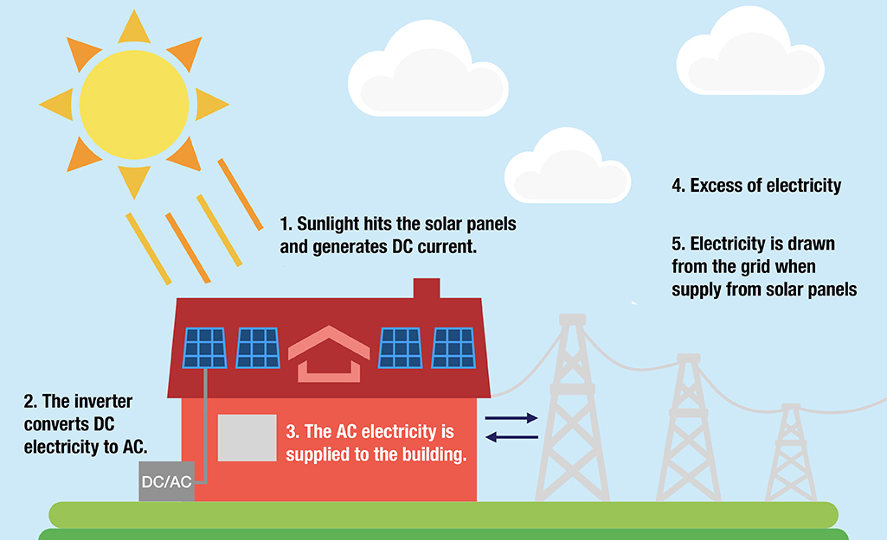
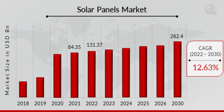

>
Update Profile
Solar Panel Comparison
Solar Energy Facts
Solar Panels: A Sustainable Future
Solar energy is the most abundant energy source on Earth!

A single hour of sunlight provides enough energy to power the world for a year!

Solar panels have dropped in cost by over 80% since 2010!